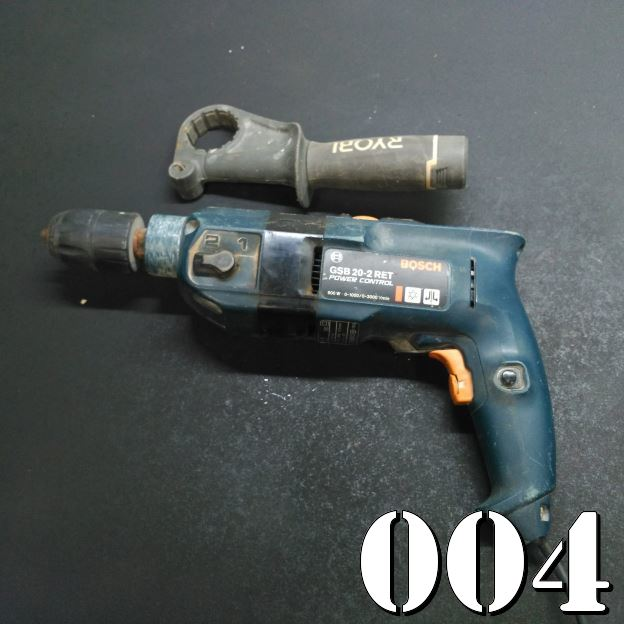
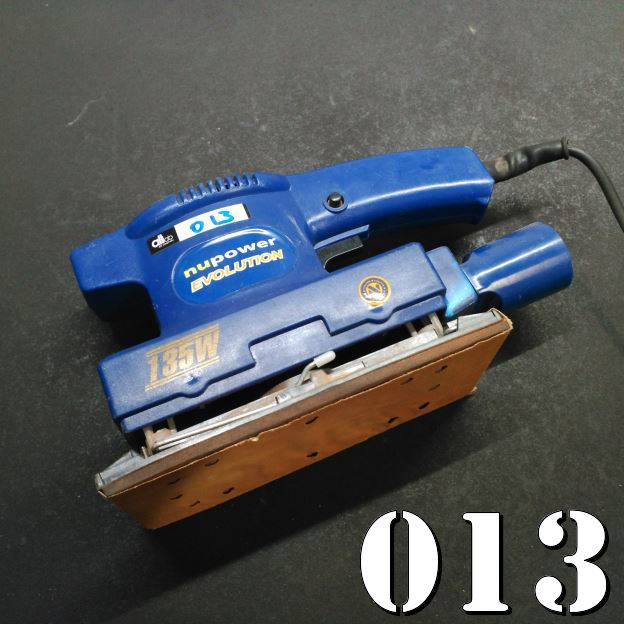
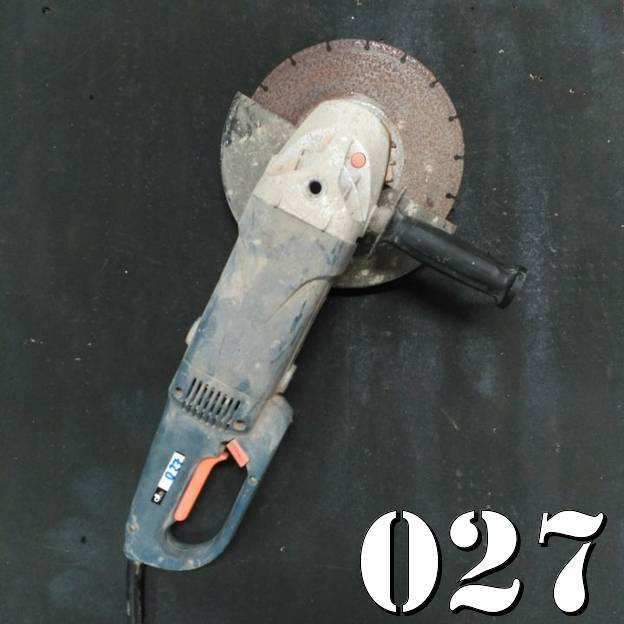

Ferramentas
- 001 - Dexter Power Z1C-32M(XD3125)
- 004 - Berbequim Bosch GSB 20-2 RET
- 005 - Agrafador eléctrico PET 25 A1
- 006 - Serra tico-tico PRACTYL 400W
- 007 - Pistola cola quente
- 008 - Ryobi Heat Gun 2000W EHG-2002C
- 009 - Rebarbadora PTS 480 A1
- 010 - KX1600 Heat Gun Black&Decker
- 013 - Nupower Evolution NPE135
- 014 - Plaina Bosch PHO 25-82 H
- 016 - Lixadora de rolo de apoio PSDS 240 B2
- 022 - Máquina de plastificar United Office
- 023 - Máquina de plastificar United Office
- 024 - Aparelho para afiar brocas PBSG 95 B1
- 025 - MECAFER - Compressor - 1.5 hp - 24 L - 8 bar
- 033 - PowerFix - Conjunto de machos de abrir roscas e cossinetes
- 036 - Carro plataforma
- 038 - Kit 37 in 1 de Sensores
001 - Dexter Power Z1C-32M(XD3125)
002 - ?
003 - ?
004 - Berbequim Bosch GSB 20-2 RET

Características
- De velocidades múltiplas
- Regulação contínua das rotações
- Rotação reversível direita/esquerda
- Sistema de electrónica
- Auto-Lock
- Softgrip
- Embraiagem de segurança contra sobrecarga
- Manual
005 - Agrafador eléctrico PET 25 A1
Características
- Ponta fina – ideal para peças particularmente estreitas
- Para fixar, reparar ou revestir de forma fácil e rápida
- Utilização cómoda com uma mão – ideal mesmo em locais de difícil acesso ou para trabalhos acima do nível da cabeça
- Adequado para materiais como películas, tecidos, couro, gesso cartonado ou madeira
- Potente – até 30 batidas/min. com pré-selecção contínua da força de impulsão
- Prático – cabo suave para um apoio confortável e antiderrapante
- Seguro – sem activação acidental devido ao circuito de 3 níveis com interruptor de alimentação, interruptor de contacto na ponta e interruptor no cabo da pistola
- Sistema de carregamento prático com carregador para agrafos (15-25 mm) e pregos (15, 20, 25, 32 mm)
- Inclui acessórios:
- 500 agrafos (200 de 15 mm / 300 de 25 mm)
- 500 pregos (200 de 25 mm / 300 de 32 mm)
- 1 chave sextavada
- Compatível com acessórios comuns (p.ex. conjunto de agrafos e pregos Parkside)
- Comprimento do cabo: 4 m
- Manual
006 - Serra tico-tico PRACTYL 400W
Características
- Potência: 400 W
- Função pendular: Não
- Velocidades: 3000 rpm
- Peso: 1.45 kg
007 - Pistola cola quente
008 - Ryobi Heat Gun 2000W EHG-2002C
009 - Rebarbadora PTS 480 A1
Características:
- Para cortes particularmente limpos e precisos
- Indicada para madeira, plástico, cerâmica, alumínio, cobre ou materiais de construção ligeira, tais como placas de gesso
- Profundidade de corte continuamente ajustável de 0–25 mm com alavanca de aperto rápido e escala precisa
- Motor de 480 W de vibração reduzida
- Cabeça em alumínio resistente e zona de preensão de borracha
- Elevada segurança devido à cobertura de protecção pendular com bloqueio de imersão desbloqueável
- Substituição fácil do disco devido ao bloqueio do fuso SPINDLE LOCK
- Ligação para aspirador externo – inclui tubo especial de 2 m com adaptador
- LED para controlar a alimentação
- Em mala resistente com fechos metálicos
- Comprimento do cabo: 4 m
- Indicada para discos comuns com Ø 85 mm
- Manual
010 - KX1600 Heat Gun Black&Decker
011 - ?
012 - ?
013 - Nupower Evolution NPE135

014 - Plaina Bosch PHO 25-82 H
015 - ?
016 - Lixadora de rolo de apoio PSDS 240 B2
Características:
- Equipamento de lixagem de apoio para metal, madeira e plástico
- Ideal para rebarbar, desenferrujar e lixar
- Suportes ajustáveis para a peça de trabalho
- Coberturas de proteção de metal para máxima segurança
- Proteção contra fagulhas ajustável e transparente
- Funcionamento silencioso e sem vibrações
- Interruptor para ligar/desligar protegido contra o pó
- Pé com fixação antivibração
- Manual
017 - ?
018 - ?
019 - ?
020 - ?
021 - ?
022 - Máquina de plastificar United Office
Características
- Máquina de plastificar a quente e a frio, fácil de utilizar
- Para fotografias, certificados, diplomas e muito mais.
- Guia ajustável e avanço de folha automático
- Com luzes de funcionamento e de operacionalidade
- Manuseamento fácil
- Colocar o documento na bolsa de plástico
- Inserir bolsa de plástico com o lado fechado para a frente
- Retirar o documento plastificado
- Com função ABS para paragem do processo de plastificação, por ex., em caso de enviesamento do plástico
- Tamanho de plastificação máximo: A4
- Tempo de aquecimento reduzido: aprox. 3 minutos
- Interruptor rotativo para ajuste da espessura da película
- Espessura da plastificação a quente: 80 até 125 mícron; a frio: até um máx. de 200 mícron
- Inclui 30 folhas de plastificação a quente: 10 x folhas de plástico A4, 10 x folhas de plástico A5, 10 x bolsas para cartões-de-visita
- Com mecanismo prático de corte para papel e plástico: corta no máx. 3 folhas ou 1 documento laminado (80 g/m²)
- Folhas de plastificação adequadas, por ex., para United Office ULGZ 80 A1
- Colocar o documento na bolsa de plástico
- Inserir bolsa de plástico com o lado fechado para a frente
- Retirar o documento plastificado
- Manual
023 - Máquina de plastificar United Office
024 - Aparelho para afiar brocas PBSG 95 B1
Características
- Afia brocas HSS de forma fácil e segura
- Para 16 tamanhos entre os 3,0–10,0 mm
- Pedra de afiar ajustável para resultados ideais
- Estrutura robusta com apoios antiderrapantes
- Em mala de transporte e arrumação prática
- Manual
025 - MECAFER - Compressor - 1.5 hp - 24 L - 8 bar
Características
- capacity: 180l/min (6.35 CFM)
- pressure: 8 bar (116 psi)
- motor: 1.5 hp
- operating voltage: 230VAC / 50Hz
- tank: 24l
- dimensions: 570 x 255 x 445mm
- weight: 20kg
- Manual
- Ficha Produto
026 - ?
027 - ?

028 - ?
029 - ?
030 - Aspirador Bosch
031 - ?

032 - ?

033 - PowerFix - Conjunto de machos de abrir roscas e cossinetes

Características
- Conjunto de machos de abrir roscas e cossinetes
- Execução, reparação e resserragem de roscas métricas ISO, com acabamento preciso
- Para roscas interiores e exteriores
- Numa caixa de metal robusta
- Manual
034 - ?

035 - ?
036 - Carro plataforma
Características
- Capacidade máxima carga:150Kg
- Medidas: 76,5X47,2X82cm
- Peso: 9 kg